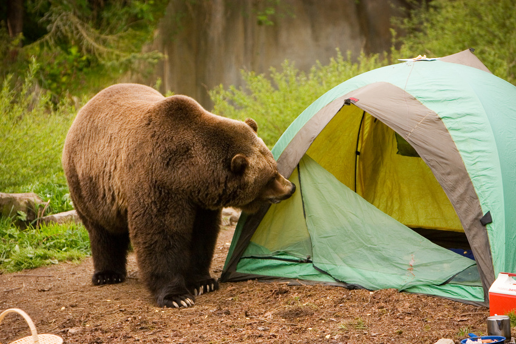

May 05. 2017 • Category:
OMG | Tent Life | Beyond the Trail
You can't make a mistake. Anything that happens you can learn to use - and make something beautiful out of it. Let your heart take you to wherever you want to be. Just relax and let it flow. That easy.
Tags: Scared Straight, Outdoors